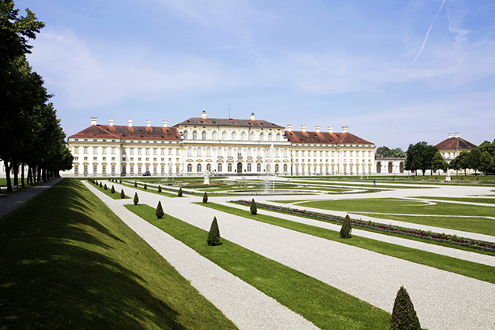

Paths Of Glory
Main Content

Set in 1916 ‘France’, Stanley Kubrick’s powerful wartime drama was made at the Geiselgasteig Studio, south of Munich, before the director settled down to make his films almost entirely in the UK.
The vast ‘French’ chateau, in which the court martial is held, is the Neues Schloss of Schloss Schleissheim, housing the Bayerische Staatsgalerie collection of baroque art. Find it to the northwest of Munich, on the S-1 urban line and the 292 bus to Oberschleissheim.
1957 seems to have been a good year on-screen for Schloss Schleissheim, which also provided the exteriors for Alain Resnais’ influential L’Année Dernière à Marienbad (Last Year in Marienbad).
Visit Info
Visit The Film Locations
Germany
Visit: Germany
Visit: Munich
Flights: Munich Airport, Nordallee 25, 85356 München (tel: 49.89.97500)
Visit: Schloss Schleissheim (Schleissheim Palace), 85764 Oberschleißheim (tel: 49.89.3158720)